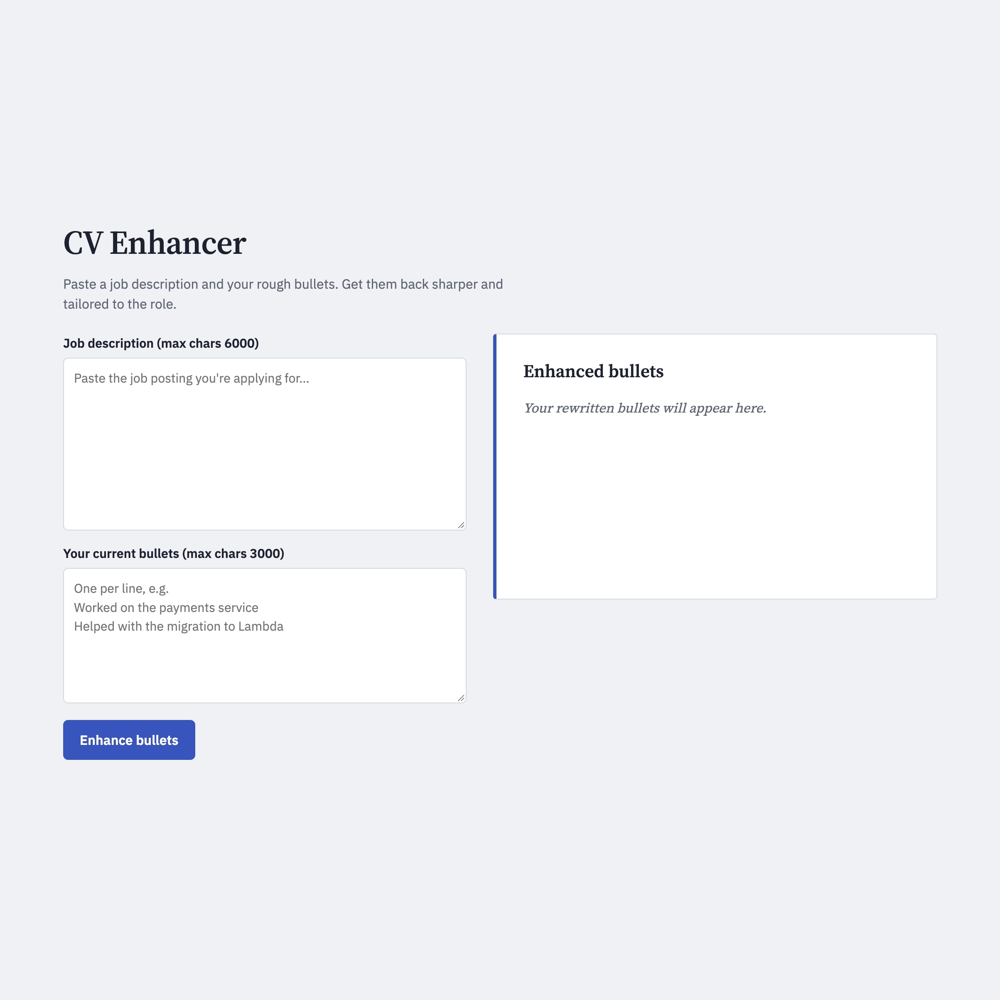
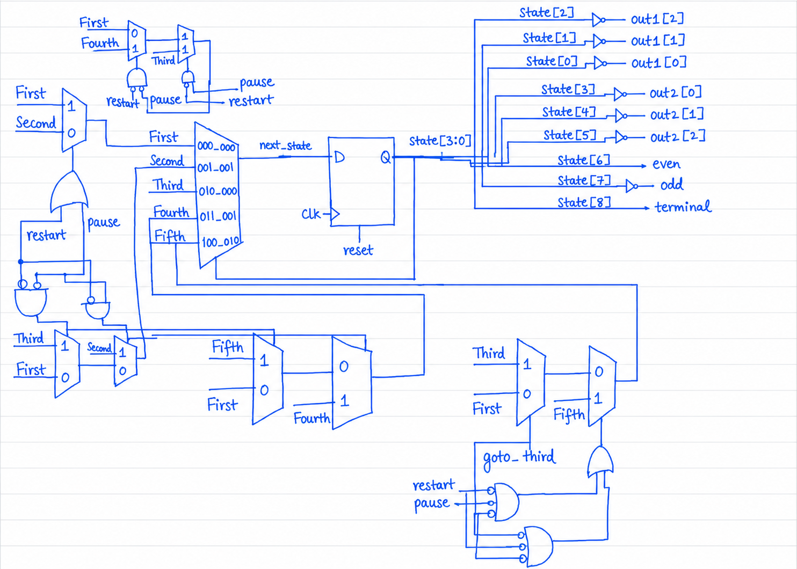
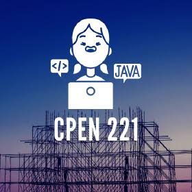
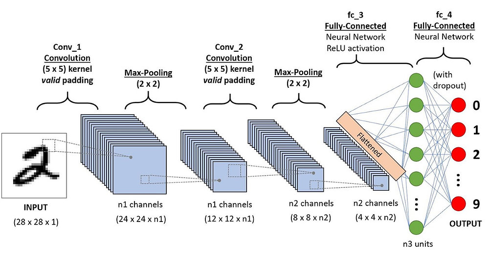
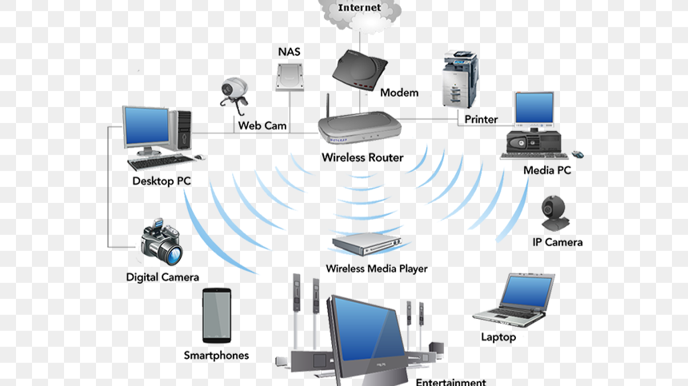
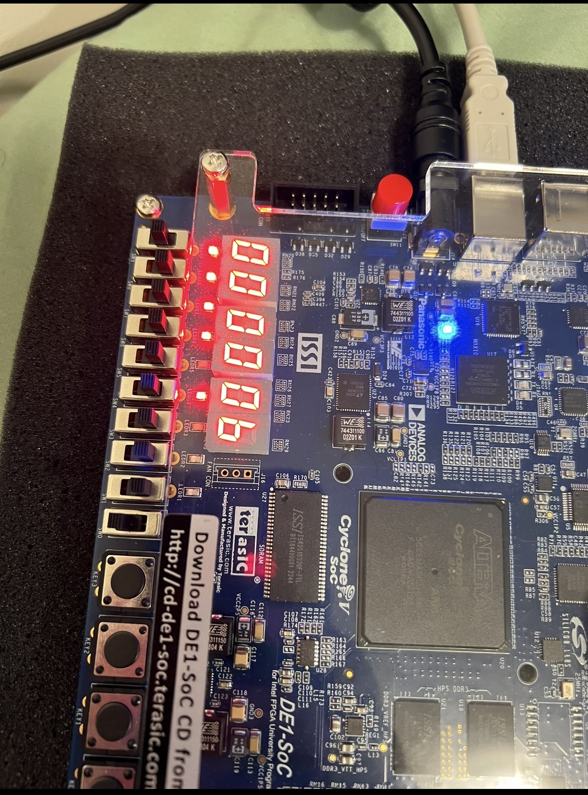
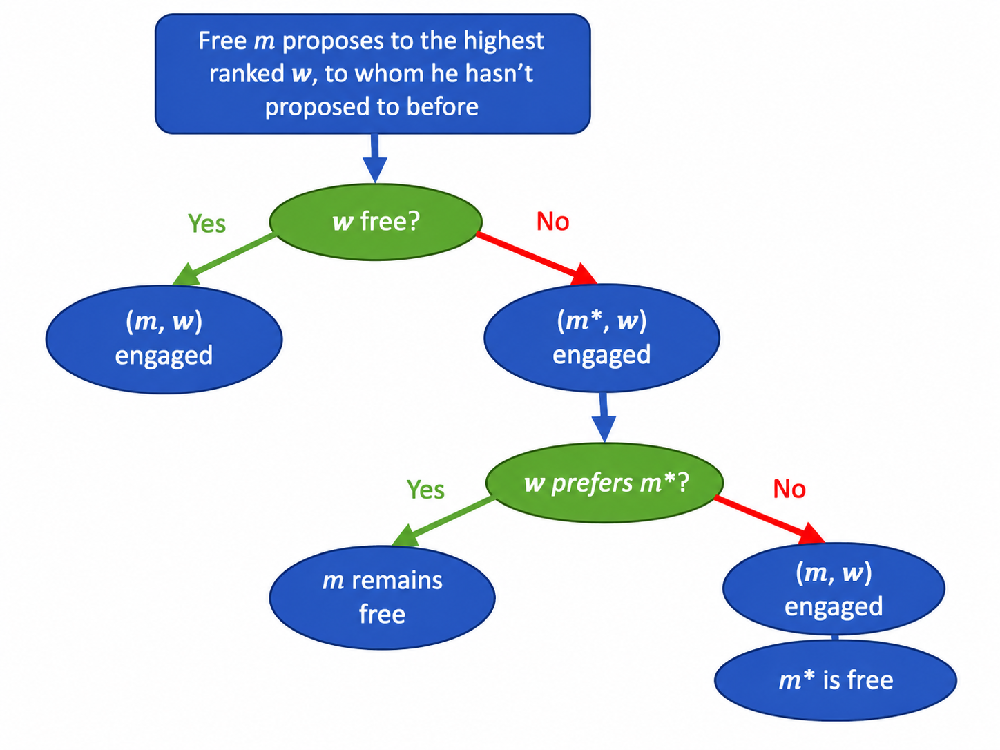

Docker
ECS Fargate
Node.js/Express
DynamoDB
SNS/SQS
GitHub Actions CI/CD
Independently designed, built, and deployed a full-stack rice mill management
platform on AWS, engineered for production-grade scalability and reliability
using Docker, ECS Fargate, and automated CI/CD pipelines. Originally built as
a serverless architecture
before migrating the backend to containers.

Amazon Bedrock
AWS Lambda
API Gateway
AWS CDK
Python
Prompt Evaluation
Built and deployed a serverless GenAI app that tailors resume bullets to a job
description using Claude on Amazon Bedrock, with the full stack defined in AWS CDK.
Designed a 16-case prompt evaluation suite that caught the model fabricating
experience for mismatched roles, then fixed it through prompt changes.
Try the live demo.
.png)
LLaMA
Node.js
MongoDB
WebSockets
REST APIs
Javascript
Built a full-stack chat application that integrates a LLaMA to automatically
extract action items from conversations, then optimized it with a custom classifier that
cut API calls by 60% and latency by ~59%.

ROS2
robotics
computer-vision
LiDAR
machine-learning
Python
Developed an autonomous robotic car using ROS/ROS2, Python, LiDAR, and computer vision. Implemented PID steering control, LiDAR-based wall following, and YOLO traffic light detection for real-time robotic navigation.

os
concurrency
C++
CPEN 331 (Operating Systems) is a course I completed at UBC. The course primarily consisted of six large projects that lead to creating many aspects of an operating system for os161.

SystemVerilog
FPGA
Digital Design
FSM
Cryptography
Hardware Design
Parallel Computing
Developed a hardware-accelerated RC4 cryptanalysis system in SystemVerilog to
demonstrate the vulnerability of stream ciphers to brute-force attacks.
Implemented and tested the design on an FPGA platform, leveraging hardware
parallelism to improve key-search performance.

EC2
RDS
VPC
NAT
Javascript
Designed and deployed a highly available and scalable three-tier task management application
on AWS using Amazon EC2, Application Load Balancer, Auto Scaling Groups, and
Amazon RDS MySQL. Built the infrastructure to support scalable, fault-tolerant,
and secure application deployment.

Java
concurrency
synchronization
CPEN 221 (Software Construction) consisted of three major mini-projects
focused on applying software engineering principles through practical
Java development. One of these projects, Buffers, Concurrency, and
Wikipedia, involved designing and implementing a concurrent
Wikipedia information service while exploring caching, multithreading,
networking, and secure software practices.

Python
CNN
DNN
machine learning
Pytorch
Numpy
Deep Learning
CPEN 355 focused on the theory and implementation of modern deep learning models. The course covered neural networks, convolutional neural networks (CNNs),Decision trees, and generative models. Projects involved implementing and training deep learning models using Python and PyTorch, with emphasis on understanding model architectures, training strategies, and practical applications.

Computer Networks
TCP/UDP
Java
Socket Programming
Routing
Ethernet
HTTP
ELEC 331 (Computer Communications) focused on the design and implementation of modern computer networks. The course covered the Internet protocol stack, TCP/IP, routing algorithms, Ethernet, congestion and flow control, reliable data transfer, and network programming using Java. Through assignments and labs, I gained practical experience building networked applications and understanding how data is transmitted reliably across distributed systems.

Verilog
RISC
pipelining
hardware
CPEN 211 (Introduction to Microcomputers) is a course I completed at UBC. The course consisted of weekly project-based labs that lead to creating our own RISC computer with Verilog.

algorithyms
data-structures
CPSC 320 (Intermediate Algorithm Design and Analysis) explored the
fundamental principles of designing and analyzing efficient algorithms.
The course emphasized evaluating computational complexity through time
and space analysis while developing algorithmic solutions for a wide
range of computational problems.